Third Exam, Friday, December 6, 2002.
You may use any result from your notes or a homework that is clearly stated.
You may use one sheet of handwritten notes, but no other sources.
The exam consists of six questions, and lasts one hundred
minutes.
You can collect the graded exam from me next week. Grades should be
available early next week.
- 1.
- (15 points)
Determine the best bound on the optimal solution value of an ILP
with each of the following objective functions that is available from the specified
LP relaxation optima 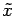.
- (a)
-
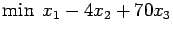,
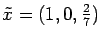.
- (b)
-
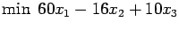,
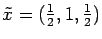.
- (c)
-
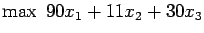,
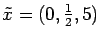.
- 2.
- (20 points)
Jane is applying to graduate school. There are five schools she is
interested in attending, but she can only afford to send application
fees to three of them.
She has put a value on the education at each of the schools,
and she has also decided what her chances of being accepted are.
She wants to maximize the sum of the values of the three chosen schools,
but she wants to choose the three in such a way that the sum of the
probabilities of rejection is no greater than 1.5.
The values are as follows:
| School n |
1 |
2 |
3 |
4 |
5 |
| Value vn |
90 |
150 |
80 |
100 |
120 |
| Probability of rejection pn |
0.4 |
0.7 |
0.4 |
0.5 |
0.6 |
- (a)
- (4 point) Formulate Jane's problem as an integer programming
problem, with one constraint for the number of applications and
one constraint for the probabilities.
- (b)
- (8 points) How would you solve this integer program using
dynamic programming and backward recursion equations?
Describe the states, stages and recursion
equations. State f5(s) explicitly.
(Hint: You will probably need two state variables.)
- (c)
- (8 points)
Illustrate your solution method by solving the following subproblem:
There are two schools 4 and 5 left, Jane has one application left,
and she only has 0.5 of slack remaining in her probability constraint.
- 3.
- (10 points)
The point x=(1,3,2) is an interior point for the linear program
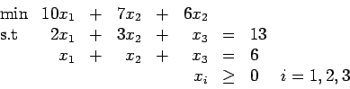
Let 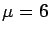.
Show there exists a dual feasible solution y with dual slacks s satisfying
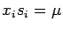
for i=1,2,3.
(Hint: The dual of
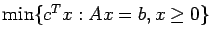
is
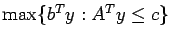.)
- 4.
- (20 points)
The following integer programming problem is being solved
using branch and bound:
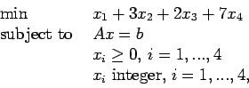
where Ax=b is a given set of linear constraints.
The progress so far is shown
here.
Here, xi is the solution to the LP relaxation at node
and zi is the value of xi.
- (a)
- (5 points) What is the best solution found so far to the
integer program?
- (b)
- (8 points) Which node(s) of the branch and bound tree can be
fathomed?
- (c)
- (7 points) What subproblems would you create next?
- 5.
- (15 points)
In the graph below, we want to find the shortest path from vertex s to vertex t.
Using Dijkstra's algorithm, so far we have labeled vertices s,
1, 2, 3, and 4.
For each labeled vertex, the first label gives the length of the shortest path to that
vertex from s going via labeled vertices only,
and the second label gives the index of the previous vertex on this shortest path.
The edge length is indicated next to each edge.
Note that the edges between labeled vertices have not been drawn in the picture.
What is the shortest path from s to t and what is its length?
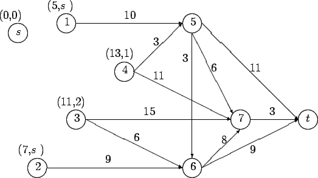
- 6.
- (20 points)
In this problem, we are considering a standard form primal-dual pair,
- (a)
- (10 points)
The diagonal scaling matrix that we use for primal-dual interior methods is D,
where the ith diagonal entry is
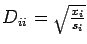.
Some interior point methods use a diagonal matrix X with Xii=xi.
Other methods use a diagonal matrix S with
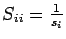.
Show that
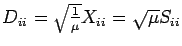
if
for all i for some 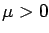.
- (b)
- (10 points)
Show that if 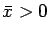
and
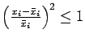
then 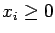.
John E. Mitchell
2003-11-19